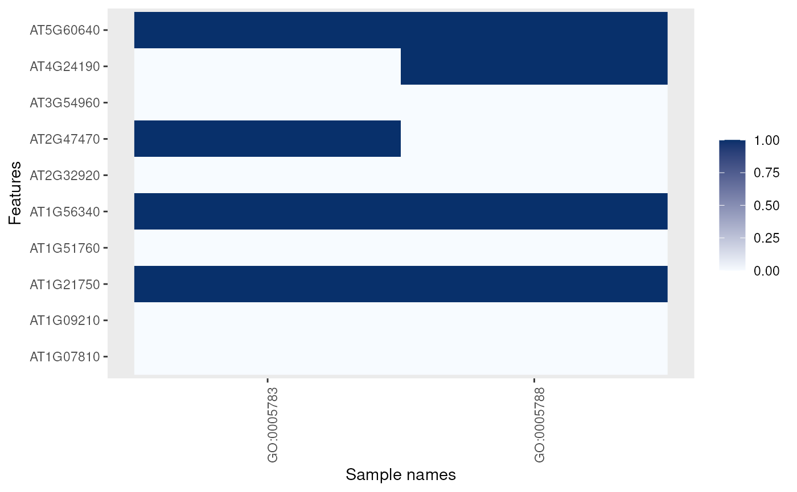

Creates a new "MSnSet" instance populated
with a GO term binary matrix based on an original object.
Arguments
- object
An instance of class
"MSnSet"or a character of feature names.- params
An instance of class
"AnnotationParams", compatible withfeatureNames(object)'s format.- namespace
The ontology name space. One or several of
"biological_process","cellular_component"or"molecular_function".- evidence
GO evidence filtering.
Value
A new "MSnSet" with the GO terms
for the respective features in the original object.
Examples
library("pRolocdata")
data(dunkley2006)
data(dunkley2006params)
goset <- makeGoSet(dunkley2006[1:10, ],
dunkley2006params)
goset
#> MSnSet (storageMode: lockedEnvironment)
#> assayData: 10 features, 2 samples
#> element names: exprs
#> protocolData: none
#> phenoData: none
#> featureData
#> featureNames: AT1G09210 AT1G21750 ... AT1G07810 (10 total)
#> fvarLabels: assigned evidence ... markers (8 total)
#> fvarMetadata: labelDescription
#> experimentData: use 'experimentData(object)'
#> Annotation:
#> - - - Processing information - - -
#> Constructed GO set using cellular_component namespace [Fri Oct 18 17:20:19 2024]
#> MSnbase version: 2.31.1
exprs(goset)
#> GO:0005783 GO:0005788
#> AT1G09210 0 0
#> AT1G21750 1 1
#> AT1G51760 0 0
#> AT1G56340 1 1
#> AT2G32920 0 0
#> AT2G47470 1 0
#> AT3G54960 0 0
#> AT4G24190 0 1
#> AT5G60640 1 1
#> AT1G07810 0 0
image(goset)
